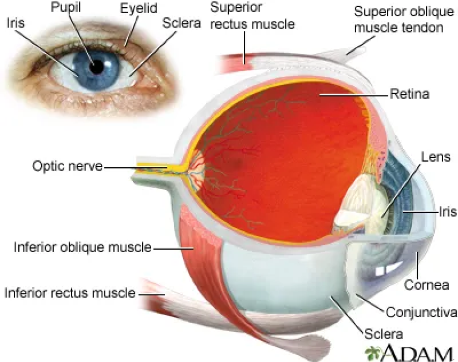

Conjunctivitis (sore/pink eye)


Conjunctivitis, commonly known as sore or pink eye, is an
inflammation or infection of the conjunctiva, the thin,
transparent layer of tissue that covers the white part of the eye
and lines the inner surface of the eyelids.
Causes and Symptoms:
- Causes:
Conjunctivitis, commonly known as sore or pink eye, is an inflammation or infection of the conjunctiva, the thin, transparent layer of tissue that Causes: Conjunctivitis can be caused by viruses, bacteria, allergens, or irrit ants. Viral conjunctivitis is often associated with the common cold or other respiratory infections and is highly contagious. Bacterial conjunctivitis can result from bacteria such as Staphylococcus aureus or Streptococcus pneumoniae. Allergic conjunctivitis occurs when the eyes react to allergens like pollen, dust, or pet dander. Irritant conjunctivitis can be caused by exposure to smoke, chemicals, or foreign bodies.
- Symptoms:
The hallmark symptom of conjunctivitis is redness or pinkness in one or both eyes. Other symptoms may include itchiness, burning or stinging sensation, excessive tearing, discharge (which may be clear, white, yellow, or greenish), swollen eyelids, sensitivity to light, and blurred vision. The specific symptoms can vary depending on the cause of conjunctivitis.covers the white part of the eye and lines the inner surface of the eyelids